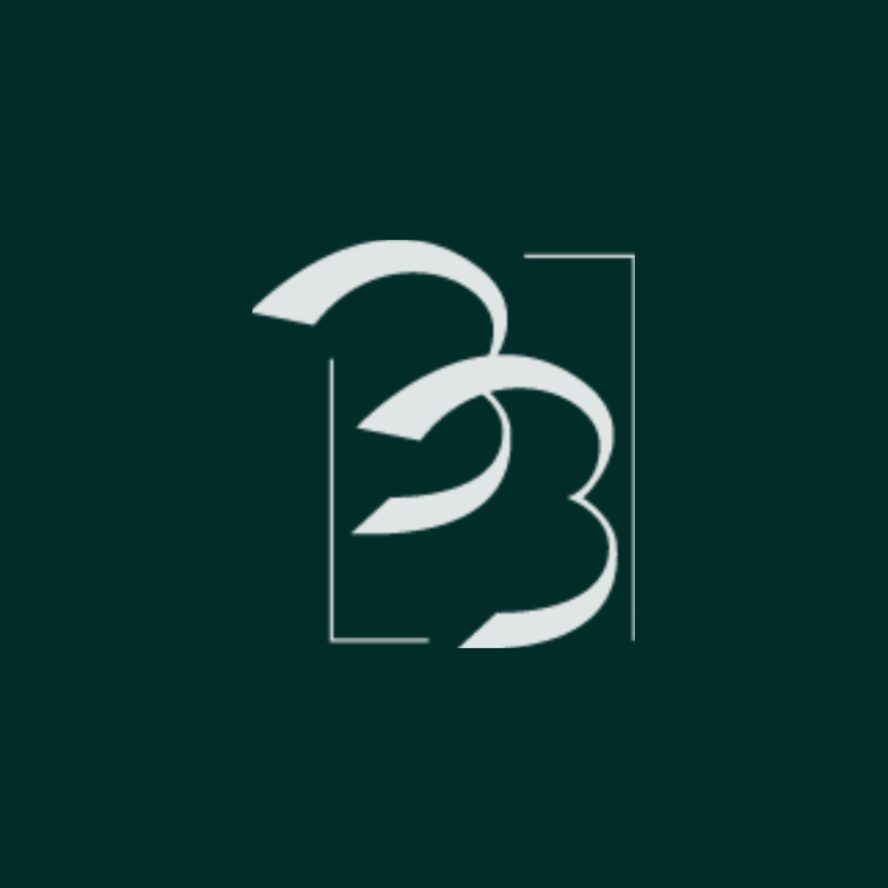
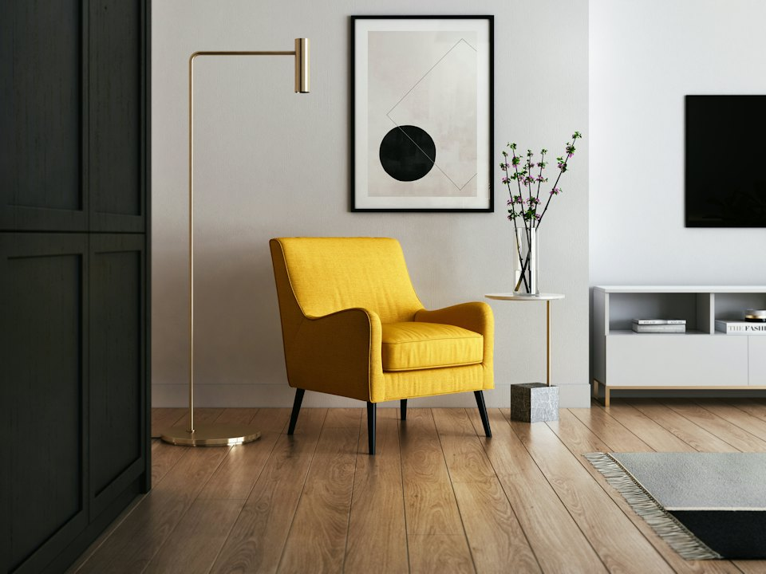
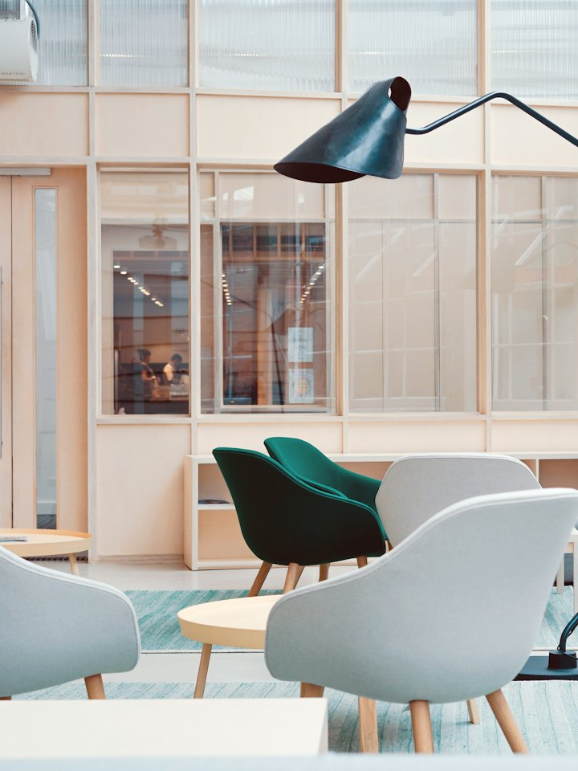
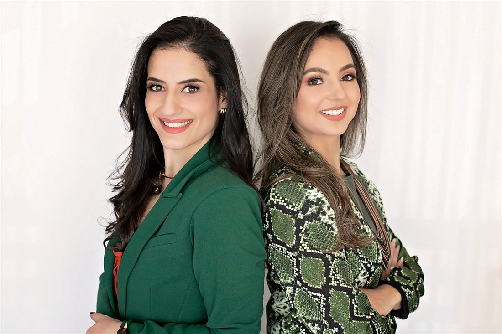
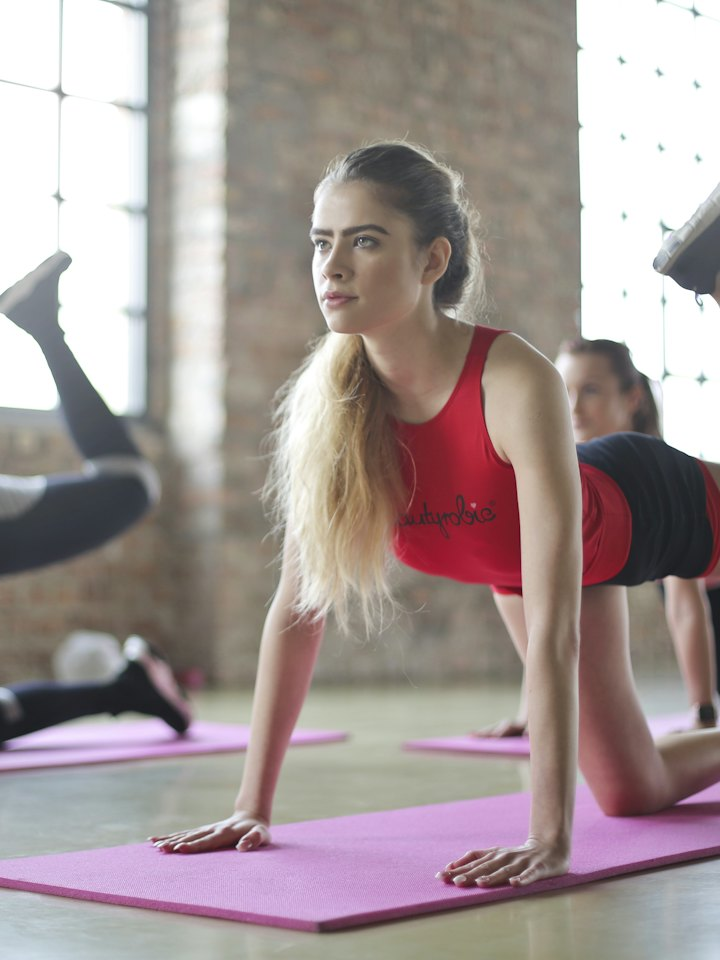

Protocolo de regulação hormonal
RAINHA
Seis etapas para investigar a raiz do desequilíbrio: escuta longa, exames aprofundados e acompanhamento contínuo.
Dra. Bianca CRM 215813 · Dra. Bruna Findikoglu CRM 215815


Duas médicasna mesma consulta
SE ISSO SOA FAMILIAR, RESPIRA FUNDO: NÃO É FALTA DE FORÇA DE VONTADE.
Sintoma repetido não é frescura: é informação. A investigação começa por levar a sério aquilo que você já descreveu tantas vezes.
O cansaço que não passa, mesmo dormindo a noite inteira.
O peso que sobe sem nenhuma mudança na rotina, e não desce com dieta alguma.
O “seus exames estão normais” que não explica como você se sente.
A libido que sumiu e que ninguém trata como assunto médico.
TPM, sono picado e ansiedade tratados como três coisas separadas.
A menopausa chegando sem plano nenhum para os próximos dez anos.

Por que criamos o protocolo
Quando a consulta dura dez minutos, sobra sintoma e falta causa.
Atendemos juntas, a quatro mãos, porque regulação hormonal não caber em um bloco de receita. Antes de qualquer tratamento vem a leitura completa: histórico, sintoma, exame, composição corporal e rotina real: a sua, não a de um protocolo genérico.
É isso que o Protocolo RAINHA organiza em seis etapas: investigar a raiz, ajustar com método e acompanhar o tempo necessário para o corpo responder.
O QUE É O
PROTOCOLO RAINHA
O programa de regulação hormonal da Ayah: investigação profunda, tratamento individualizado e acompanhamento contínuo, para retomar o controle do corpo com método, não com promessa.
O Protocolo RAINHA é a jornada de regulação hormonal feminina conduzida pela Dra. Bianca e pela Dra. Bruna Findikoglu, médicas pós-graduadas em endocrinologia. Seis etapas que unem diagnóstico aprofundado, medicação individualizada, bioimpedância e escuta, do primeiro exame ao acompanhamento de longo prazo.



Metodologia RAINHA
A JORNADA EM TRÊS TEMPOS (1 + 3 + 12)
Investigação
Consulta longa, histórico completo, painel de exames aprofundado e bioimpedância. Saímos daqui com a causa nomeada, não com um palpite.
Regulação
Protocolo individualizado por escrito, medicação personalizada e ajuste de dose a cada retorno, com leitura objetiva do que mudou no exame e no corpo.
Longevidade
Manutenção do equilíbrio, composição corporal acompanhada e plano para os próximos anos, porque hormônio regulado se sustenta com rotina, não com ciclo fechado.
Regulação
Avaliação e diagnóstico aprofundados para identificar o desequilíbrio na raiz.
Ativação
Tratamento farmacológico individualizado, com medicações personalizadas.
Intuição
Escuta profunda do corpo e das necessidades únicas de cada paciente.
Nutrição
Terapia com injetáveis para otimização metabólica e nutricional.
Harmonia
Acompanhamento da composição corporal via bioimpedância.
Autocuidado
Transformação integral, com foco em sustentabilidade e bem-estar.
Feito para quem já ouviu que os exames estão normais.
Une endocrinologia e medicina integrativa na mesma consulta.
Acompanhamento que não termina na receita.
Dois CRMs responsáveis, sempre visíveis.
AGENDA CONDUZIDA
Não atendemos em volume. Consulta longa exige agenda curta.
Cada paciente do Protocolo RAINHA passa por uma triagem inicial para entender o quadro, o histórico de exames e o momento de vida. É o que garante escuta de verdade e acompanhamento próximo do começo ao fim.
Se o seu caso não for para a nossa abordagem, dizemos isso na triagem e indicamos o caminho mais adequado. Honestidade clínica antes de agenda cheia.
COMO FUNCIONA NA PRÁTICA
Da triagem ao acompanhamento de longo prazo: clareza em cada etapa.
Triagem inicial para entender o seu quadro
Consulta de 60 minutos com as duas médicas
Painel de exames aprofundado, interpretado linha por linha
Bioimpedância e leitura da composição corporal
Protocolo individualizado entregue por escrito
Retornos programados e ajuste de dose quando necessário
No Protocolo RAINHA você não recebe um plano genérico: recebe um caminho nomeado, com retorno marcado e canal direto com a equipe. Agora veja o que investigamos antes de qualquer tratamento.
O QUE INVESTIGAMOS
Oito frentes analisadas em conjunto, porque nenhum hormônio trabalha sozinho.
Tireoide
Do TSH ao anticorpo: a leitura completa do eixo que comanda energia e metabolismo.
Insulina e metabolismo
Resistência insulínica, glicemia e o motivo real da balança não se mover.
Hormônios sexuais
Estrogênio, progesterona e testosterona lidos junto com o seu ciclo e a sua fase.
Cortisol e estresse
O eixo que sustenta (ou sabota) sono, humor e gordura abdominal.
Composição corporal
Bioimpedância a cada etapa: massa magra, gordura e água em números comparáveis.
Vitaminas e minerais
Ferro, vitamina D, B12 e o que a carência silenciosa faz com a sua energia.
Sono e ritmo
Melatonina, rotina e o ciclo que precisa voltar a restaurar de verdade.
Saúde intestinal
Absorção, inflamação e a conversa entre intestino e hormônio.
A investigação é definida caso a caso pelas médicas responsáveis. Nenhum exame é pedido por padrão, e nenhum tratamento é iniciado sem leitura completa do seu quadro.
O QUE PACIENTES RELATAM
AO REGULAR OS HORMÔNIOS
Energia que atravessa o dia inteiro
Peso que responde ao tratamento
Sono que volta a restaurar
Libido tratada como assunto médico
Exames com leitura clara, sem achismo
Um plano para os próximos dez anos
Relatos de pacientes acompanhadas na clínica. Resultados variam entre pacientes e dependem do quadro clínico individual, da adesão ao protocolo e do acompanhamento médico contínuo.
Depoimentos recebidos no direct
DUAS MÉDICAS NA MESMA CONSULTA,
UMA ÚNICA LEITURA DO SEU CORPO
DRA.
BIANCA
CRM 215813
Médica pós-graduada em endocrinologia, dedicada à regulação hormonal feminina e à investigação da raiz do desequilíbrio.
Conduz a etapa de diagnóstico do Protocolo RAINHA: anamnese longa, painel de exames e leitura integrada dos eixos hormonais.
Cofundadora da Ayah Integrative.
DRA.
BRUNA
Findikoglu · CRM 215815
Médica pós-graduada em endocrinologia, com atuação em longevidade, composição corporal e terapias injetáveis.
Conduz a etapa de ativação e manutenção: protocolo individualizado, ajuste de dose e acompanhamento por bioimpedância.
Cofundadora da Ayah Integrative e responsável pelo Protocolo Beleza Pura.
Com o olhar diagnóstico da Dra. Bianca e a condução terapêutica da Dra. Bruna, o Protocolo RAINHA reúne, numa só consulta, o que normalmente exige duas especialidades e meses de espera.
O QUE ESTÁ INCLUÍDO
NO ACOMPANHAMENTO
Você recebe
✓Triagem inicial do seu quadro antes do agendamento
✓Consulta de 60 minutos com as duas médicas
✓Painel de exames aprofundado e interpretação linha por linha
✓Bioimpedância com comparativo a cada etapa
✓Protocolo individualizado por escrito, com medicação personalizada
✓Retornos programados e ajuste de dose
✓Canal direto com a equipe entre as consultas
✓Orientação de rotina, nutrição e sono alinhada ao protocolo
Só na Ayah
✓Duas endocrinologistas conduzindo o mesmo caso, juntas
✓Metodologia RAINHA em seis etapas nomeadas
✓Agenda curta, por decisão clínica: consulta longa de verdade
✓Acesso ao Protocolo Beleza Pura, exclusivo para pacientes Ayah
Dra. Bianca CRM 215813
Dra. Bruna Findikoglu CRM 215815
Transparência
O QUE ESTÁ POR TRÁS DO VALOR DA CONSULTA
Consulta longa com duas endocrinologistas60 min
Painel hormonal e metabólico interpretado8 frentes
Bioimpedância com comparativo por etapaincluída
Protocolo individualizado por escrito6 etapas
Acompanhamento e ajuste de dose12 meses
O valor da consulta e do acompanhamento é informado na triagem, antes de qualquer agendamento, sem taxa surpresa e sem pacote fechado que você não pediu.
Triagem por WhatsApp · resposta em até 24h úteis
PERGUNTAS FREQUENTES
{{ f.q }}
{{ f.sign }}{{ f.a }}